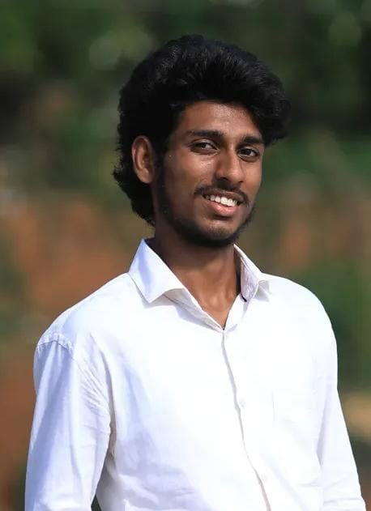

I'm a tech-savvy engineering student with a passion for building practical solutions through innovation
As a student with an explorer’s mindset, I love turning ideas into functional, thoughtful projects
Hey, I’m Joel Cutinha a curious learner, tech enthusiast, and someone who enjoys building things that actually make life easier.
My schooling began at Sacred Hearts School (2012–2018), and I completed my 10th in 2022. During PUC (2022–2024), I explored SQL, HTML, and C++, which sparked my interest in programming. In 2024, I joined engineering college, where I began learning C and web development more seriously. Since then, I’ve been working on hands-on projects, exploring electronics, and building devices with Arduino and IoT. I learn best by doing — experimenting, solving problems, and creating tech that makes an impact. Outside of tech, I enjoy badminton, volleyball, and running my small bulb wholesale business. I’m always eager to learn, connect, and build meaningful things.
Engineering student

I'am intrested in :
web development,badminton,and exploring new Tech
Programing Languages
C
C++
Python
JavaScript
web development